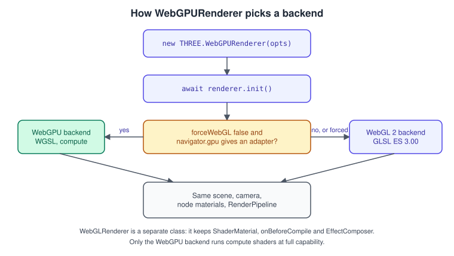
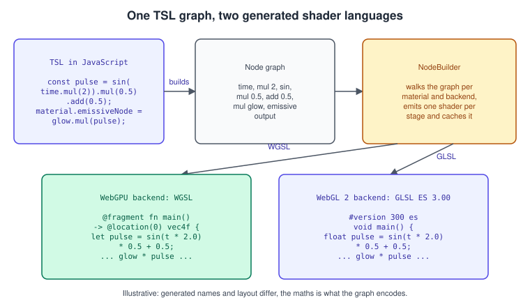
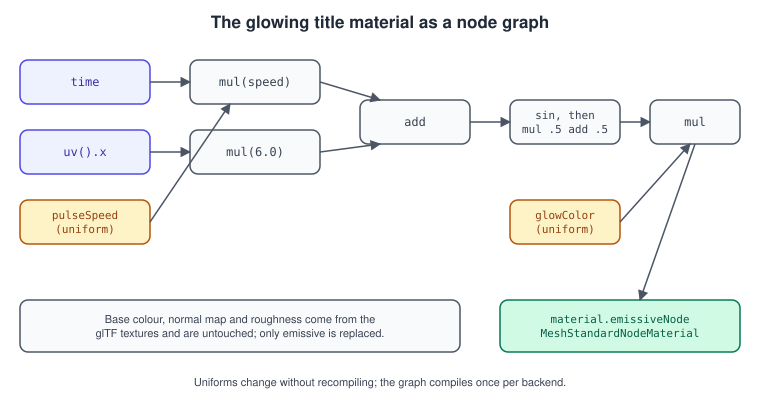
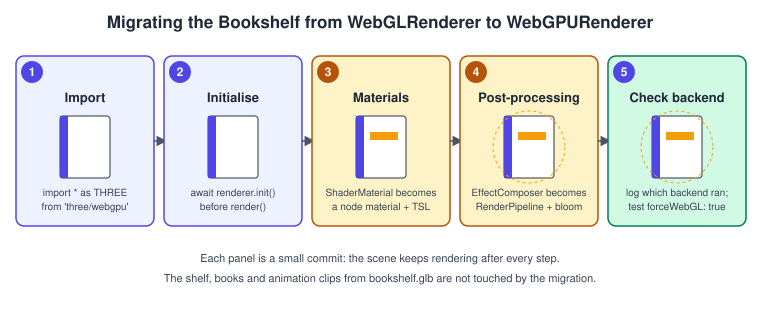

three.js WebGPURenderer and TSL
|
This content was generated with the assistance of AI and should be verified against the official documentation before being relied on in production. |
WebGPURenderer is the renderer of three.js that targets WebGPU and, when WebGPU is not available, falls back to a WebGL 2 backend with
the same scene API. Materials are no longer written as GLSL strings: they are built from small JavaScript objects called nodes,
using the Three.js Shading Language (TSL), and the library turns the graph into WGSL for WebGPU or GLSL ES 3.00 for WebGL 2. This page
explains how to switch the Bookshelf from WebGLRenderer to WebGPURenderer, how TSL works, how to give the book titles a glowing
material, how compute and post-processing change, and what to check when migrating an older code base.
The general concepts behind this page are in Shading Languages Landscape.
The facts were checked in November 2026 against three.js r187 (npm three@0.187.0, published 2026-10-30), the three.js API
documentation, the TSL wiki page and the Migration Guide. WebGPU and WGSL are W3C Candidate Recommendation Drafts and WebGPU is not
yet Baseline on MDN; it needs a secure context (HTTPS or localhost). Browser support moves quickly, so use the table on
WebGPU Overview and Comparison and test navigator.gpu at run time instead of
trusting version numbers. The code runs in any current evergreen browser because of the WebGL 2 fallback, and it is built with Vite like the
rest of the three.js track (see three.js Getting Started).
This page is the last step of the Bookshelf three.js track: the GLB shelf from bookshelf.glb has been loaded
(Loading Models with glTF), lit with PBR, orbited, clicked and played with, and
given bloom with the WebGL path of Post-processing. Here the same scene moves to
WebGPURenderer, the cover material gets a TSL "glowing title" and bloom is rebuilt with RenderPipeline. For GLSL-based customisation on
WebGLRenderer see Custom Shaders in GLSL.
Two renderers, one scene API

Scene, Object3D, cameras, geometries, textures, AnimationMixer and the glTF loaders are shared. What differs is the renderer class and
what can be attached to it:
| Topic | WebGLRenderer (entry point three) |
WebGPURenderer (entry point three/webgpu) |
|---|---|---|
Backends |
WebGL 2 only (WebGL 1 was dropped in r163) |
WebGPU, with an automatic WebGL 2 fallback; |
Initialisation |
Synchronous constructor, ready at once |
Asynchronous: |
Custom shaders |
|
Node materials and TSL; |
Post-processing |
|
|
Compute |
none |
compute nodes through |
Shadow filter |
|
|
Source: three.js manual: WebGPURenderer
The two renderers live in different entry points. Importing everything from three/webgpu gives a build that contains the node materials
and WebGPURenderer; TSL functions come from three/tsl; ready-made effects such as bloom are in three/addons/tsl/display/.
Mixing the three and three/webgpu entry points in one bundle is a classic source of "two copies of three.js" problems,
so pick one entry point per application. A bundler such as Vite resolves both from node_modules/three, see
Bundling and Publishing and
JavaScript Modules.
Creating the renderer
| Option | Default | Meaning |
|---|---|---|
|
|
MSAA on the default framebuffer; 4 samples unless |
|
|
Overrides the sample count when |
|
|
Whether the canvas is transparent |
|
|
Depth and stencil buffers of the default framebuffer |
|
|
Use the WebGL 2 backend even when WebGPU is available (useful for testing the fallback) |
|
|
Logarithmic depth; ignored when |
|
|
Reversed depth range for better precision at distance |
|
|
Type of the internal output buffers; |
|
device preference |
Texture type of the canvas output; other formats may add overhead |
|
|
Use multiview for WebXR rendering when supported |
Source: three.js docs: WebGPURenderer
The first listing is the complete entry point of the Bookshelf three.js track after the switch. It uses the Timer that replaced Clock in
r183, an animation loop, and a resize handler that caps the pixel ratio (the topic of
Performance and Disposal).
// main.js (Vite project, three@0.187)
import * as THREE from 'three/webgpu';
import { OrbitControls } from 'three/addons/controls/OrbitControls.js';
import { GLTFLoader } from 'three/addons/loaders/GLTFLoader.js';
const renderer = new THREE.WebGPURenderer( { antialias: true } );
renderer.setPixelRatio( Math.min( window.devicePixelRatio, 2 ) );
renderer.setSize( window.innerWidth, window.innerHeight );
document.body.appendChild( renderer.domElement );
// init() is asynchronous: it requests the adapter and device, or builds the WebGL 2 fallback.
await renderer.init();
const isWebGPU = renderer.backend.isWebGPUBackend === true;
console.log( isWebGPU ? 'Backend: WebGPU' : 'Backend: WebGL 2 fallback' );
const scene = new THREE.Scene();
scene.background = new THREE.Color( 0x1b1d26 );
const camera = new THREE.PerspectiveCamera( 45, window.innerWidth / window.innerHeight, 0.1, 100 );
camera.position.set( 0, 1.6, 4 );
const controls = new OrbitControls( camera, renderer.domElement );
controls.target.set( 0, 1, 0 );
scene.add( new THREE.HemisphereLight( 0xffffff, 0x334455, 1.2 ) );
const lamp = new THREE.DirectionalLight( 0xffffff, 2.5 );
lamp.position.set( 3, 5, 2 );
scene.add( lamp );
const gltf = await new GLTFLoader().loadAsync( '/bookshelf.glb' );
scene.add( gltf.scene );
const timer = new THREE.Timer();
timer.connect( document );
window.addEventListener( 'resize', () => {
camera.aspect = window.innerWidth / window.innerHeight;
camera.updateProjectionMatrix();
renderer.setSize( window.innerWidth, window.innerHeight );
} );
renderer.setAnimationLoop( ( timestamp ) => {
timer.update( timestamp );
controls.update();
renderer.render( scene, camera );
} );Things the listing shows and the table above summarises:
-
init()returns a promise and resolves when the device (or the fallback context) exists.render()may only be called after that. Inside a loop started withsetAnimationLoopthe initialisation is guaranteed, so the explicitawaitis only strictly needed for on-demand rendering, for feature detection likeisWebGPUBackend, and for code that uses the renderer before the first frame. -
Since r181 the
*AsyncmethodsrenderAsync(),computeAsync(),clearAsync(),initTextureAsync()andhasFeatureAsync()are deprecated; the synchronous methods work once the renderer is initialised. Older tutorials thatawait renderer.renderAsync()every frame still work but print deprecation warnings. -
KTX2Loader.detectSupportAsync()is deprecated since r181: calldetectSupport( renderer )afterawait renderer.init(). -
renderer.backendis the active backend.isWebGPUBackendis a flag used in the three.js examples to tell the two apart; it is a convenience for logging and branching, not a stable public contract, so keep branches on it small.
Node materials and what happens to old materials
WebGPURenderer renders every material through the node system. The classic classes still work: a MeshStandardMaterial coming out of
GLTFLoader is mapped by the renderer to its node counterpart (MeshStandardNodeMaterial) behind the scenes. That is why the
Bookshelf looks the same after the switch with no change to the loading code. Node materials add a family of *Node properties that replace
a stage of the shader with a node graph.
| Property | Replaces |
|---|---|
|
The base colour (diffuse colour times map) |
|
The emissive colour otherwise derived from |
|
Roughness and metalness otherwise derived from the numbers and maps |
|
The vertex position in the vertex stage |
|
Alpha, the shading normal and the final fragment colour |
A property such as emissiveNode replaces the built-in value completely. To modify the existing value instead of replacing it, the node
library offers accessors such as materialEmissive, materialRoughness and materialMetalness, so material.roughnessNode = materialRoughness.mul( 0.5 ) halves the value that the maps would have produced.
TSL: the Three.js Shading Language
TSL is a JavaScript API for building shader graphs. Every function call returns a node; nothing runs on the GPU until the renderer compiles the graph that is attached to a material. This has three consequences that shape the code you write.
-
Operators are methods. JavaScript has no operator overloading, so
a + b * cis writtena.add( b.mul( c ) ). The method names areadd,sub,mul,div,sin,cos,pow,mixand so on, matching the GLSL and WGSL built-ins. -
Constants are baked, uniforms are live. A JavaScript number inside the graph is compiled into the shader. A
uniform( value )node is a slot you can change at run time without recompiling. -
One graph, two languages. The
NodeBuilderwalks the graph once per backend and emits WGSL for WebGPU or GLSL ES 3.00 for WebGL 2.

The shader fragments in the figure are illustrative: the generated code has its own variable names and structure, but the arithmetic is what the graph encodes. The compiled result is cached, so a material with the same graph is compiled once per backend.
The building blocks
| TSL function | Use |
|---|---|
|
A value that can change without recompiling; hooks |
|
The UV attribute as a |
|
Samples a texture and returns a |
|
Float nodes with the elapsed seconds and the frame delta |
|
Typed constants and constructors |
|
Linear interpolation, like the shader built-in |
|
A reusable function node; required to use |
|
Control flow; |
|
Geometry and transform inputs |
|
Per-instance index and a GPU storage array for compute |
The Fn wrapper is the part that surprises people who know GLSL. A plain JavaScript function that returns nodes is fine for expressions,
because it simply builds the graph, but statements that look like imperative shader code (assigning to a variable, If) need Fn, which
records them as shader statements instead of executing them in JavaScript:
import { Fn, vec3, If, positionLocal } from 'three/tsl';
// Clamp the height of a vertex: an If inside Fn becomes a real shader branch.
const limitPosition = Fn( ( { position } ) => {
const limit = 10;
const result = vec3( position );
If( result.y.greaterThan( limit ), () => {
result.y = limit;
} );
return result;
} );
material.positionNode = limitPosition( { position: positionLocal } );Two release-note details matter for new code: since r187 the operands of TSL math functions are implicitly coerced to a broader common type
and since r181 the constant formerly called PI2 is TWO_PI. Since r185, in a node assigned to
material.positionNode of a skinned mesh, use positionGeometry instead of positionLocal or the skinned transform is not applied.
The glowing title
The book covers in bookshelf.glb use one shared "Cover" material with a texture. The goal is a soft pulse on the covers, as if the titles were
backlit, without touching the texture, normal map or lighting. That is exactly what emissiveNode is for.

The pulse is \( p(u, t) = \tfrac{ 1 }{ 2 } \sin( s\,t + 6u ) + \tfrac{ 1 }{ 2 } \), with \( t \) the time in seconds, \( s \) the speed uniform and \( u \) the horizontal texture coordinate. The emissive colour is the glow colour multiplied by \( p \). Because \( 6u \) varies across the cover, the pulse sweeps over the book from left to right instead of flashing uniformly.
// glowing-title.js
import * as THREE from 'three/webgpu';
import { Fn, uniform, uv, time, sin, color } from 'three/tsl';
export const glow = {
color: uniform( new THREE.Color( 0xffb347 ) ),
speed: uniform( 2.0 )
};
// Reusable node: a 0..1 pulse that sweeps along the horizontal UV axis.
const pulse = Fn( () => {
const phase = time.mul( glow.speed ).add( uv().x.mul( 6.0 ) );
return sin( phase ).mul( 0.5 ).add( 0.5 );
} );
/**
* Replaces the cover material of every book in the loaded glTF scene with a node material
* that keeps the original textures and adds a pulsing emissive term.
*/
export function applyGlowingTitles( root ) {
const cache = new Map();
root.traverse( ( object ) => {
if ( ! object.isMesh ) return;
const materials = Array.isArray( object.material ) ? object.material : [ object.material ];
const replaced = materials.map( ( old ) => {
if ( old.name !== 'Cover' ) return old;
if ( cache.has( old ) ) return cache.get( old );
const node = new THREE.MeshStandardNodeMaterial( {
map: old.map,
normalMap: old.normalMap,
roughness: old.roughness,
metalness: old.metalness
} );
node.name = 'CoverGlow';
node.emissiveNode = glow.color.mul( pulse() );
cache.set( old, node );
return node;
} );
object.material = Array.isArray( object.material ) ? replaced : replaced[ 0 ];
} );
}Call applyGlowingTitles( gltf.scene ) after loading. Because glow.color and glow.speed are uniforms, a debug panel or the click
handler can change them every frame without recompiling anything:
// In the pointer handler of the "pull the book out" interaction:
function highlight( book ) {
glow.speed.value = 6.0; // faster pulse while selected
glow.color.value.set( 0xffe08a ); // brighter colour
}
function unhighlight() {
glow.speed.value = 2.0;
glow.color.value.set( 0xffb347 );
}The material works on both backends: the same graph becomes WGSL on WebGPU and GLSL ES 3.00 on the fallback. Two practical points:
-
The glow is a single shared material, so every book pulses together. To select one book, give it its own clone of the node material (the cache above keys on the old material, so create a second node per book instead).
-
The emissive value is added to the lit result, it is not multiplied by light. With bloom (see below) the brightest part of the pulse is what blooms, so keep the emissive intensity near 1 and let the bloom threshold do the work.
Compute nodes
A compute node is TSL code that runs once per element of a GPU storage buffer, not once per pixel or vertex. In the Bookshelf it moves
the "dust" motes around the lamp without touching the CPU. instancedArray allocates a storage buffer, instanceIndex is the index of the
current invocation, and .compute( count ) turns an Fn into a dispatchable node.
// dust.js
import * as THREE from 'three/webgpu';
import { Fn, instancedArray, instanceIndex, deltaTime, float, If } from 'three/tsl';
const COUNT = 2000;
export function createDust( renderer ) {
// Initial positions on the CPU; the array is uploaded once.
const initial = new Float32Array( COUNT * 3 );
for ( let i = 0; i < COUNT; i ++ ) {
initial[ i * 3 ] = ( Math.random() - 0.5 ) * 4;
initial[ i * 3 + 1 ] = Math.random() * 3;
initial[ i * 3 + 2 ] = ( Math.random() - 0.5 ) * 2;
}
const positions = instancedArray( initial, 'vec3' );
// One invocation per mote: fall slowly and wrap around at the floor.
const update = Fn( () => {
const p = positions.element( instanceIndex );
p.y.subAssign( deltaTime.mul( 0.2 ) );
If( p.y.lessThan( 0 ), () => {
p.y.assign( 3 );
} );
} )().compute( COUNT );
// Render the motes as camera-facing sprites that read their position from the same buffer.
const material = new THREE.SpriteNodeMaterial( { transparent: true, opacity: 0.5 } );
material.positionNode = positions.toAttribute();
material.scaleNode = float( 0.02 );
const sprites = new THREE.Sprite( material );
sprites.count = COUNT;
return { sprites, step: () => renderer.compute( update ) };
}Use it in the loop before drawing: const dust = createDust( renderer ); scene.add( dust.sprites ); and call dust.step() at the start
of every frame. Compute needs the WebGPU backend for its full capability; on the WebGL 2 fallback compute support is limited, so a
production build checks renderer.backend.isWebGPUBackend and either skips the effect or computes it on the CPU there. The signature is
compute( computeNodes, dispatchSize ), where the size may be a count, an [x, y, z] array or an indirect storage buffer; the return
value is a promise only in some situations, so do not rely on it. computeAsync() is
deprecated since r181 together with the other *Async methods.
Post-processing with RenderPipeline

EffectComposer does not work with WebGPURenderer. Its replacement is RenderPipeline, a class that owns the full frame: you describe
the final output as a TSL node and call renderPipeline.render() instead of renderer.render(). The class was named PostProcessing until
r182 and was renamed RenderPipeline in r183; old code that still uses the old name needs the rename, and its renderAsync() is
deprecated like the rest of the async methods.
import * as THREE from 'three/webgpu';
import { pass } from 'three/tsl';
import { bloom } from 'three/addons/tsl/display/BloomNode.js';
// Bloom for the glowing titles. renderer, scene, camera and controls come from main.js.
const renderPipeline = new THREE.RenderPipeline( renderer );
const scenePass = pass( scene, camera );
const sceneColor = scenePass.getTextureNode();
// bloom( node, strength, radius, threshold )
const bloomPass = bloom( sceneColor, 0.7, 0.4, 0.85 );
// The output node is the last node of the chain: scene colour plus the blurred highlights.
renderPipeline.outputNode = sceneColor.add( bloomPass );
renderer.setAnimationLoop( ( timestamp ) => {
timer.update( timestamp );
controls.update();
renderPipeline.render(); // not renderer.render( scene, camera )
} );Set renderPipeline.needsUpdate = true after you replace outputNode at run time. The renderer can only use a RenderPipeline with
WebGPURenderer.
Several effect nodes changed in recent releases (see the checklist), for instance AnamorphicNode was removed in r185 in favour of
BloomNode, and GTAONode AO is in the red channel only since r181.
Migration checklist from WebGLRenderer
| If your code does this | Do this instead | Since |
|---|---|---|
|
|
- |
|
A node material with |
- |
|
Replace the stage with a node ( |
- |
|
|
- |
|
|
r183 |
|
Synchronous |
r181 (deprecated) |
|
|
r183 |
|
|
r182 (WebGL deprecated), r186 (WebGPU removed) |
|
|
r182 |
|
|
r183 |
|
|
r181 |
TSL |
|
r181 |
TSL |
|
r185 |
|
|
r187 |
Screen looks too dark or semi-transparent against a transparent clear |
Premultiplied alpha changed; set an opaque |
r185 |
Source: three.js wiki: Migration Guide
The Migration Guide recommends upgrading in steps of about ten releases, because deprecation warnings last about that long, and reading the
console after each step. PMREM environment maps became cube-render-target based in r187 and the old CubeUVReflectionMapping was removed, so
image-based lighting can look slightly different after the upgrade.
Where the books are outdated
| Book and chapter | What it says | Today |
|---|---|---|
LTJ ch. 11, TCB ch. 6 |
Post-processing is |
Still valid with |
LTJ ch. 4 and 11, TCB ch. 5 |
Custom shaders are GLSL ES 1.00 strings in |
|
PAR ch. 3, 7 |
WebGL 1.0 is the only backend |
|
All books |
The animation loop is |
|
None of the three books covers WebGPU, WGSL or TSL, so the sections above derive from the official documentation only.
Pitfalls
-
Forgetting
await renderer.init()before the first manualrender()gives an error about an uninitialised renderer; withsetAnimationLoopthe initialisation is automatic. -
Mixing the
threeandthree/webgpuentry points produces objects from two copies of the library that do not recognise each other. Usethree/webgpueverywhere, including the addons that you import. -
Using GLSL features in a node material: strings of GLSL do not go into
colorNode. Express the logic with TSL, or keep that material onWebGLRenderer. -
Comparing frame times between backends: the fallback is WebGL 2 with a different cost model, so profile on the backend your users get.
-
Compute on the fallback: guard compute-driven effects behind the backend check.
-
Testing only on one browser: use
forceWebGL: trueto exercise the fallback on a machine that has WebGPU.
See it in
The same renderer concepts in the neighbouring pages: WebGPU Overview and Comparison (the raw API behind this renderer), Materials and PBR (the classic material properties that the node properties override), and Performance and Disposal (releasing the resources this page creates).
References
-
three.js manual, WebGPURenderer: https://threejs.org/manual/#en/webgpurenderer
-
three.js documentation: WebGPURenderer, Renderer, RenderPipeline, MeshStandardNodeMaterial, Timer
-
three.js wiki, Three.js Shading Language: https://github.com/mrdoob/three.js/wiki/Three.js-Shading-Language
-
three.js wiki, Migration Guide: https://github.com/mrdoob/three.js/wiki/Migration-Guide
-
three.js releases: https://github.com/mrdoob/three.js/releases
-
three.js examples: https://threejs.org/examples/?q=webgpu
-
W3C WebGPU: https://www.w3.org/TR/webgpu/ and WGSL: https://www.w3.org/TR/WGSL/
-
MDN WebGPU API: https://developer.mozilla.org/en-US/docs/Web/API/WebGPU_API
-
Tony Parisi, WebGL: Up and Running (O’Reilly, 2012): https://www.oreilly.com/library/view/webgl-up-and/9781449326487/
-
Jos Dirksen, Learning Three.js, 2nd edition (Packt, 2015): https://www.packtpub.com/en-us/product/learning-threejs-the-javascript-3d-library-for-webgl-second-edition-9781784392215
-
Jos Dirksen, Three.js Cookbook (Packt, 2015): https://www.packtpub.com/product/threejs-cookbook/9781783981182